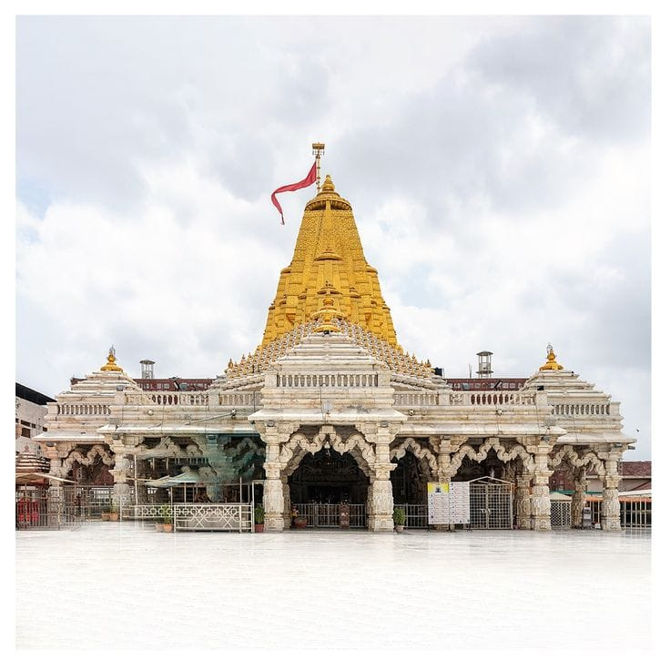
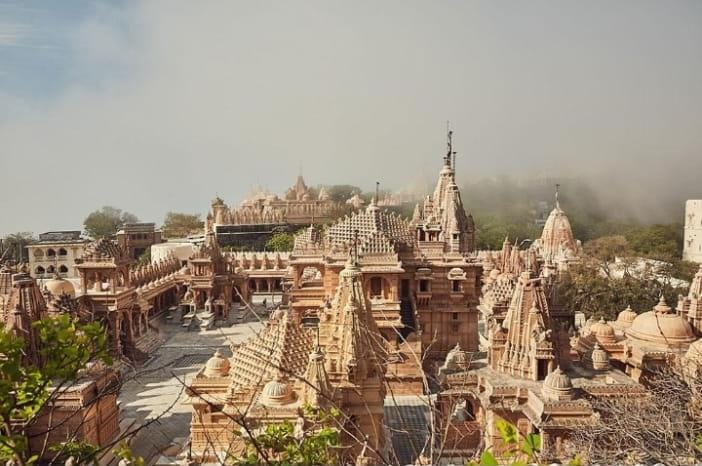
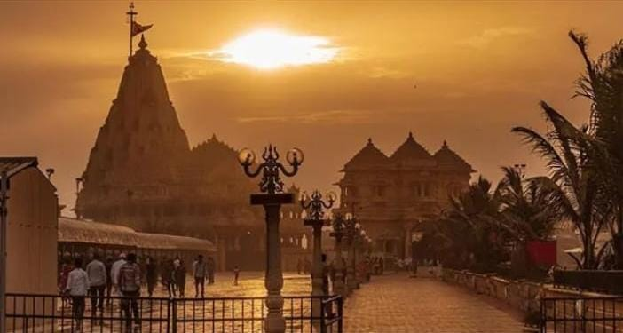

Location: Dwarka, Gujarat
Distance from Ahmedabad: 450 km
The Dwarkadhish Temple is one of the Char Dham pilgrim sites and is dedicated to Lord Krishna.

Location: Ambaji, Gujarat
Distance from Ahmedabad: 200 km
The Ambaji Temple is a sacred shrine dedicated to Goddess Amba.

Location: Parathana, Gujarat
Distance from Ahmedabad: 300 km
The Parathan Temple is a sacred shrine dedicated to Lord Shiva.

Location: Veraval, Gujarat
Distance from Ahmedabad: 400 km
The Somnath Temple is one of the 12 Jyotirlinga shrines of Lord Shiva.